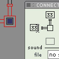
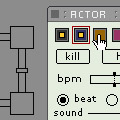

Connector. version beta 0.6
|
||||||
Description
Connector is a tool that functions as an algorithmic catalyst.
It has two important sides: Sound and MIDI. The instrument can play sound
only, midi only or both at the same time. You define a system of connectors
that all have their individual properties. When the system has been set
up, you can create an "actor" that will travel through the system
and trigger sound and midi when it enters a new connector. NOTE: it is
the connectors that have the important sound and midi information,not
the actor. The
actor has timing information, general sound volume and midichannel information.
By selecting a connector (click on it and it becomes red) or an actor
(click on the representation of the actor in the actor palette) these
unique propertiesare displayed in the palette information.